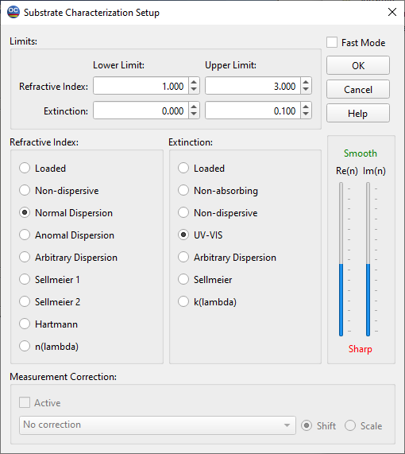

Substrate Characterization
The Substrate Characterization Setup window is similar to the Layer Characterization Setup window, with the key difference being the absence of thickness limits settings. This difference arises from the fact that the thickness of the substrate is not determined during the characterization procedure; the user must specify the substrate thickness beforehand through the Options item.
In the upper part of the window, users can specify:
Lower limit for the substrate refractive index.
Upper limit for the substrate refractive index.
Lower limit for the extinction coefficient.
Upper limit for the extinction coefficient.
The lower section of the window offers a selection of models for:
Substrate refractive index
Extinction coefficient
The names of these models (e.g., non-dispersive, normal dispersion, etc.) are designed to reflect the physical basis of each model.
If necessary, users can apply Measurement Correction to the measured data, ensuring more accurate results during the characterization process.
